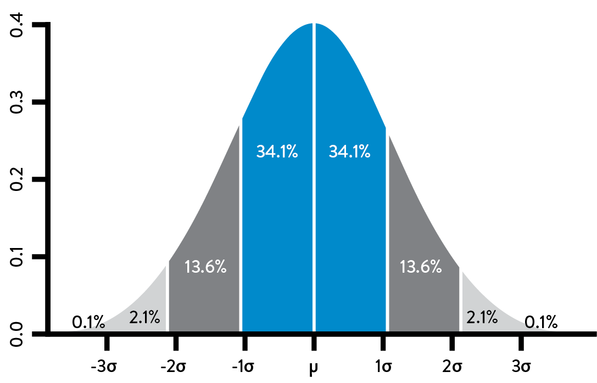
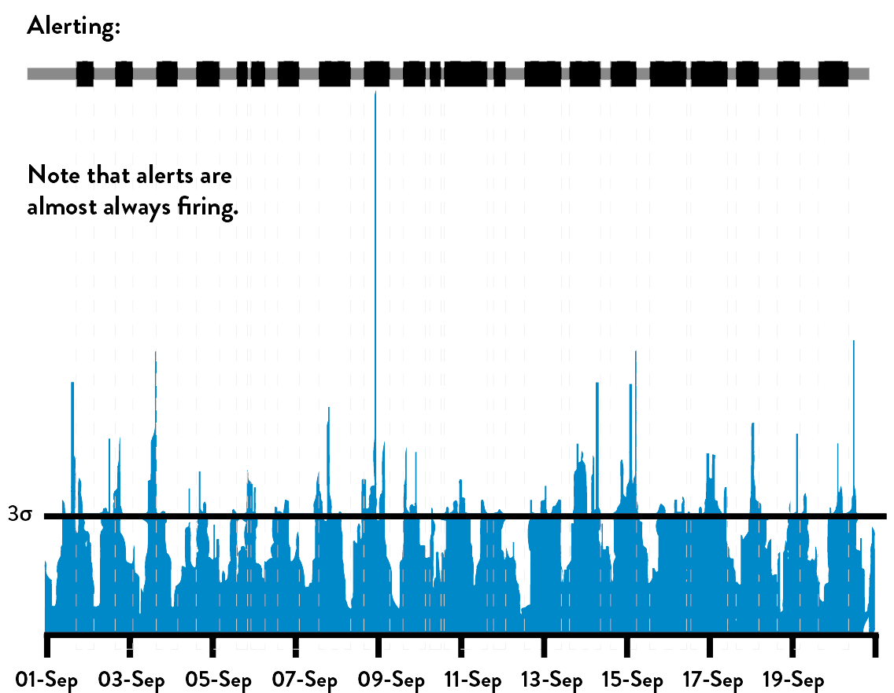
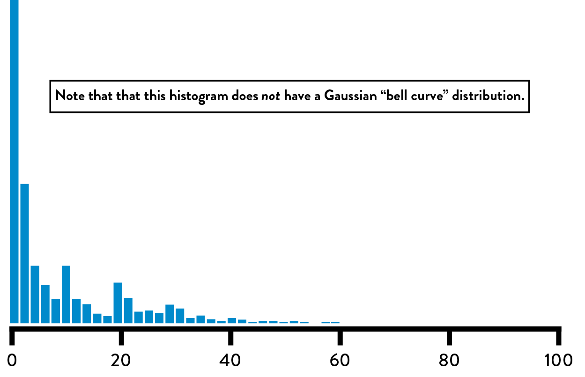
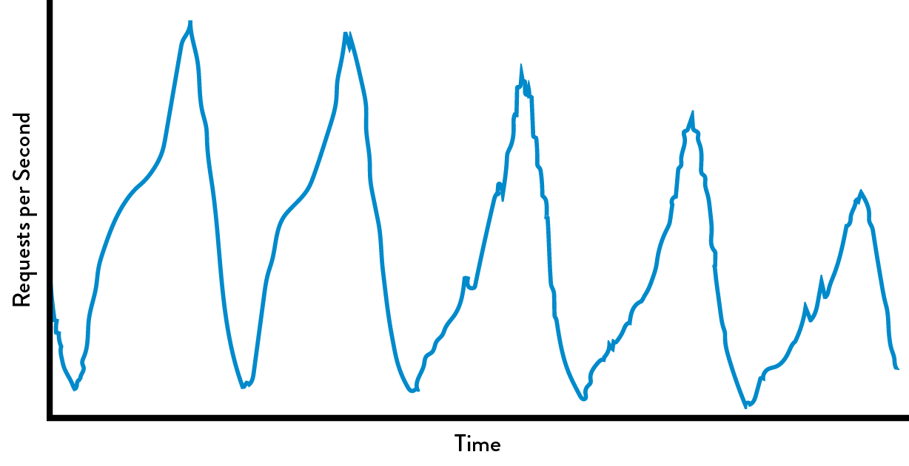
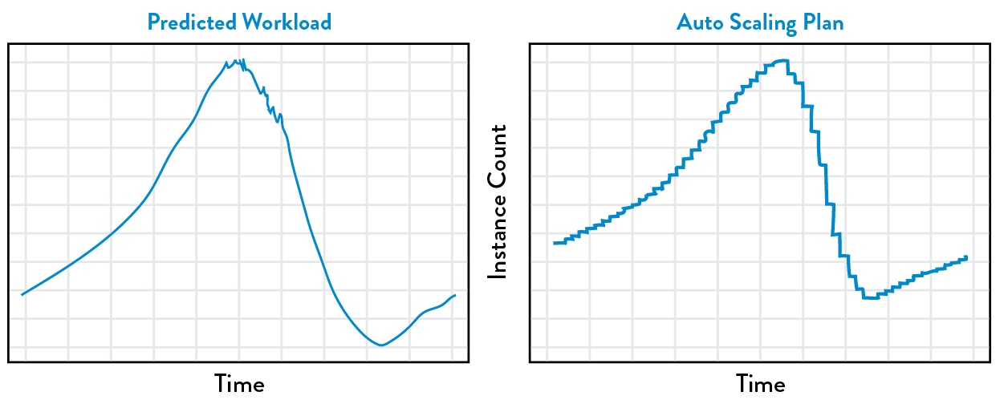
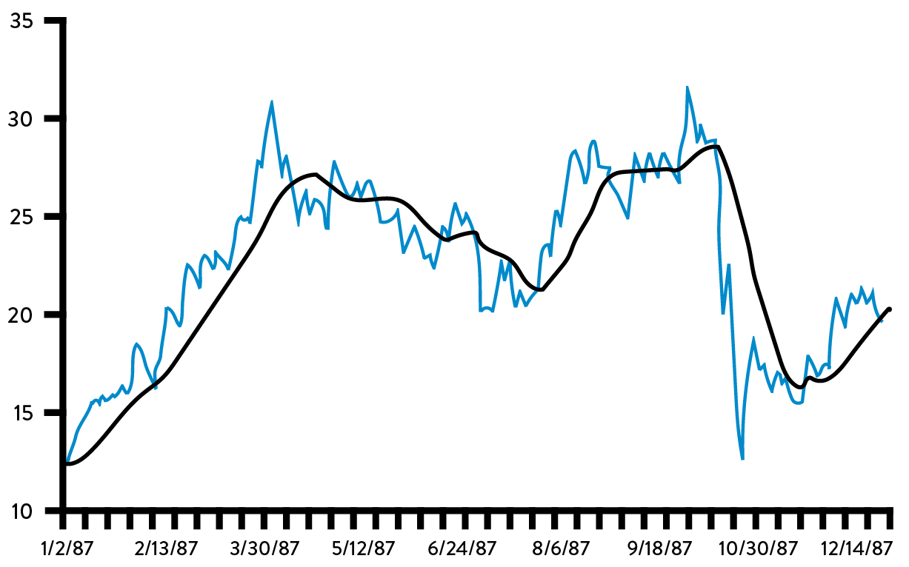
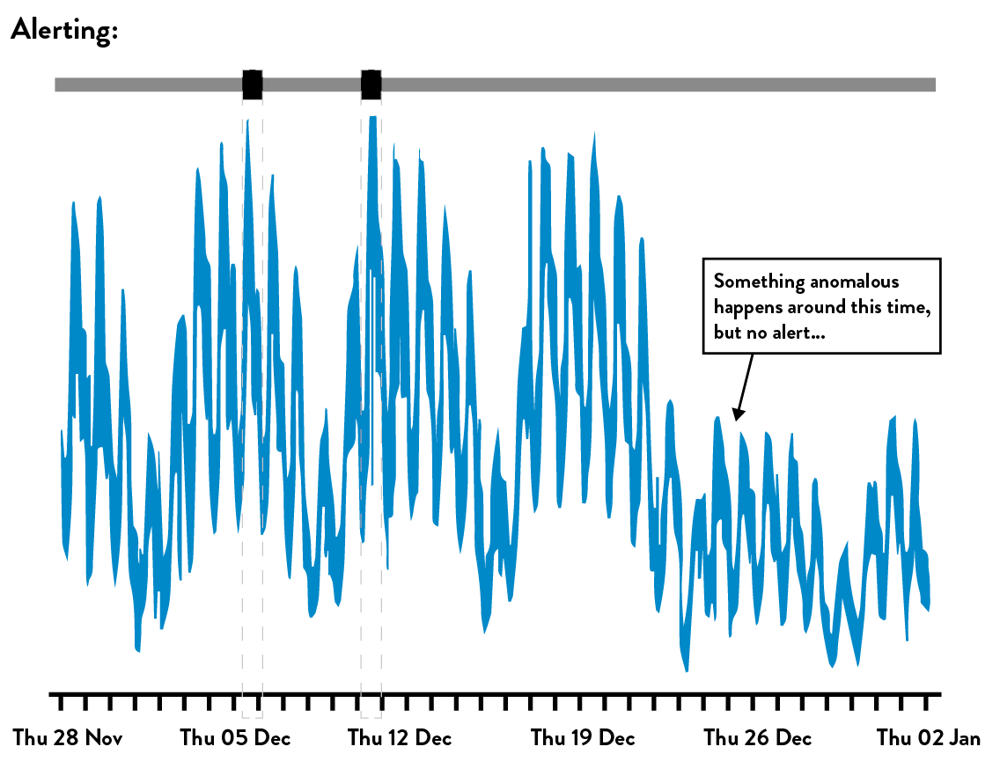
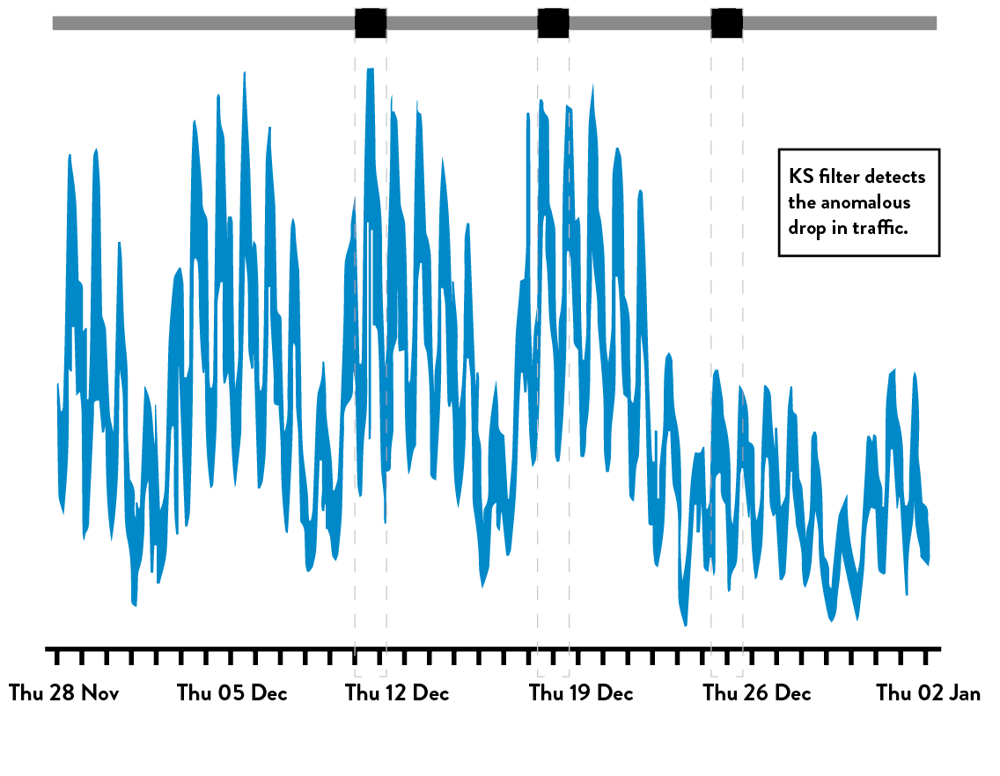

15Analyze Telemetry to Better Anticipate Problems and Achieve Goals
As we saw in the previous chapter, we need sufficient production telemetry in our applications and infrastructure to see and solve problems as they occur. In this chapter, we will create tools that allow us to discover variances and ever-weaker failure signals hidden in our production telemetry so we can avert catastrophic failures. Numerous statistical techniques will be presented, along with case studies demonstrating their use.
A great example of analyzing telemetry to proactively find and fix problems before customers are impacted can be seen at Netflix, a global provider of streaming films and television series. Netflix had revenue of $6.2 billion from seventy-five million subscribers in 2015. One of their goals is to provide the best experience to those watching videos online around the world, which requires a robust, scalable, and resilient delivery infrastructure. Roy Rapoport describes one of the challenges of managing the Netflix cloud-based video delivery service: “Given a herd of cattle that should all look and act the same, which cattle look different from the rest? Or more concretely, if we have a thousand-node stateless compute cluster, all running the same software and subject to the same approximate traffic load, our challenge is to find any nodes that don’t look like the rest of the nodes.”
One of the statistical techniques that the team used at Netflix in 2012 was outlier detection, defined by Victoria J. Hodge and Jim Austin of the University of York as detecting “abnormal running conditions from which significant performance degradation may well result, such as an aircraft engine rotation defect or a flow problem in a pipeline.”
Rapoport explains that Netflix “used outlier detection in a very simple way, which was to first compute what was the ‘current normal’ right now, given population of nodes in a compute cluster. And then we identified which nodes didn’t fit that pattern, and removed those nodes from production.”
Rapoport continues, “We can automatically flag misbehaving nodes without having to actually define what the ‘proper’ behavior is in any way. And since we’re engineered to run resiliently in the cloud, we don’t tell anyone in Operations to do something—instead, we just kill the sick or misbehaving compute node, and then log it or notify the engineers in whatever form they want.”
By implementing the Server Outlier Detection process, Rapoport states, Netflix has “massively reduced the effort of finding sick servers, and, more importantly, massively reduced the time require Rapoport states d to fix them, resulting in improved service quality. The benefit of using these techniques to preserve employee sanity, work/life balance, and service quality cannot be overstated.” The work done at Netflix highlights one very specific way we can use telemetry to mitigate problems before they impact our customer.
Throughout this chapter we will explore many statistical and visualization techniques (including outlier detection) that we can use to analyze our telemetry to better anticipate problems. This enables us to solve problems faster, cheaper, and earlier than ever, before our customer or anyone in our organization is impacted; furthermore, we will also create more context for our data to help us make better decisions and achieve our organizational goals.
USE MEANS AND STANDARD DEVIATIONS TO DETECT POTENTIAL PROBLEMS
One of the simplest statistical techniques that we can use to analyze a production metric is computing its mean (or average) and standard deviations. By doing this, we can create a filter that detects when this metric is significantly different from its norm, and even configure our alerting so that we can take corrective action (e.g., notify on-call production staff at 2 a.m. to investigate when database queries are significantly slower than average).
When critical production services have problems, waking people at 2 a.m. may be the right thing to do. However, when we create alerts that are not actionable or are false-positives, we’ve unnecessarily woken up people in the middle of the night. As John Vincent, an early leader in the DevOps movement, observed, “Alert fatigue is the single biggest problem we have right now…We need to be more intelligent about our alerts or we’ll all go insane.”
We create better alerts by increasing the signal-to-noise ratio, focusing on the variances or outliers that matter. Suppose we are analyzing the number of unauthorized login attempts per day. Our collected data has a Gaussian distribution (i.e., normal or bell curve distribution) that matches the graph in the figure 29. The vertical line in the middle of the bell curve is the mean, and the first, second, and third standard deviations indicated by the other vertical lines contain 68%, 95%, and 99.7% of the data, respectively.
 Figure 29: Standard deviations (σ) & mean (µ) with Gaussian distribution (Source: Wikipedia’s “Normal Distribution” entry, https://en.wikipedia.org/wiki/Normal_distribution.)
A common use of standard deviations is to periodically inspect the data set for a metric and alert if it has significantly varied from the mean. For instance, we may set an alert for when the number of unauthorized login attempts per day is three standard deviations greater than the mean. Provided that this data set has Gaussian distribution, we would expect that only 0.3% of the data points would trigger the alert.
Even this simple type of statistical analysis is valuable, because no one had to define a static threshold value, something which is infeasible if we are tracking thousands or hundreds of thousands of production metrics.
For the remainder of this book, we will use the terms telemetry, metric, and data sets interchangeably—in other words, a metric (e.g., “page load times”) will map to a data set (e.g., 2 ms, 8 ms, 11 ms, etc.), the term used by statisticians to describe a matrix of data points where each column represents a variable of which statistical operations are performed.
INSTRUMENT AND ALERT ON UNDESIRED OUTCOMES
Tom Limoncelli, co-author of The Practice of Cloud System Administration: Designing and Operating Large Distributed Systems and a former Site Reliability Engineer at Google, relates the following story on monitoring: “When people ask me for recommendations on what to monitor, I joke that in an ideal world, we would delete all the alerts we currently have in our monitoring system. Then, after each user-visible outage, we’d ask what indicators would have predicted that outage and then add those to our monitoring system, alerting as needed. Repeat. Now we only have alerts that prevent outages, as opposed to being bombarded by alerts after an outage already occurred.”
In this step, we will replicate the outcomes of such an exercise. One of the easiest ways to do this is to analyze our most severe incidents in the recent past (e.g., 30 days) and create a list of telemetry that could have enabled earlier and faster detection and diagnosis of the problem, as well as easier and faster confirmation that an effective fix had been implemented.
For instance, if we had an issue where our NGINX web server stopped responding to requests, we would look at the leading indicators that could have warned us earlier that we were starting to deviate from standard operations, such as:
- Application level: increasing web page load times, etc.
- OS level: server free memory running low, disk space running low, etc.
- Database level: database transaction times taking longer than normal, etc.
- Network level: number of functioning servers behind the load balancer dropping, etc.
Each of these metrics is a potential precursor to a production incident. For each, we would configure our alerting systems to notify them when they deviate sufficiently from the mean, so that we can take corrective action.
By repeating this process on ever-weaker failure signals, we find problems ever earlier in the life cycle, resulting in fewer customer impacting incidents and near misses. In other words, we are preventing problems as well as enabling quicker detection and correction.
PROBLEMS THAT ARISE WHEN OUR TELEMETRY DATA HAS NON-GAUSSIAN DISTRIBUTION
Using means and standard deviations to detect variance can be extremely useful. However, using these techniques on many of the telemetry data sets that we use in Operations will not generate the desired results. As Dr. Toufic Boubez observes, “Not only will we get wakeup calls at 2 a.m., we’ll get them at 2:37 a.m., 4:13 a.m., 5:17 a.m. This happens when the underlying data that we’re monitoring doesn’t have a Gaussian distribution.”
In other words, when the distribution of the data set does not have the Gaussian bell curve described earlier, the properties associated with standard deviations do not apply. For example, consider the scenario in which we are monitoring the number of file downloads per minute from our website. We want to detect periods when we have unusually high numbers of downloads, such as when our download rate is greater than three standard deviations from our average, so that we can proactively add more capacity.
Figure 30 shows our number of simultaneous downloads per minute over time, with a bar overlaid on top. When the bar is black, the number of downloads within a given period (sometimes called a “sliding window”) is at least three standard deviations from the average. Otherwise, it is gray.
 Figure 30: Downloads per minute: over-alerting when using “3 standard deviation” rule
(Source: Dr. Toufic Boubez, “Simple math for anomaly detection.”)
The obvious problem that the graph shows is that we are alerting almost all of the time. This is because in almost any given period of time, we have instances when the download count exceeds our three standard deviation threshold.
To confirm this, when we create a histogram (see figure 31) that shows the frequency of downloads per minute, we can see that it does not have the classic, symmetrical bell curve shape. Instead, it is obvious that the distribution is skewed toward the lower end, showing that the majority of the time we have very few downloads per minute but that download counts frequently spike three standard deviations higher.
 Figure 31: Downloads per minute: histogram of data showing non-Gaussian distribution
(Source: Dr. Toufic Boubez, “Simple math for anomaly detection.”)
Many production data sets are non-Gaussian distribution. Dr. Nicole Forsgren explains, “In Operations, many of our data sets have what we call ‘chi squared’ distribution. Using standard deviations for this data not only results in over- or under-alerting, but it also results in nonsensical results.” She continues, “When you compute the number of simultaneous downloads that are three standard deviations below the mean, you end up with a negative number, which obviously doesn’t make sense.”
Over-alerting causes Operations engineers to be woken up in the middle of the night for protracted periods of time, even when there are few actions that they can appropriately take. The problem associated with under-alerting is just as significant. For instance, suppose we are monitoring the number of completed transactions, and the completed transaction count drops by 50% in the middle of the day due to a software component failure. If this is still within three standard deviations of the mean, no alert will be generated, meaning that our customers will discover the problem before we do, at which point the problem may be much more difficult to solve.
Fortunately, there are techniques we can use to detect anomalies in even non-Gaussian data sets, which are described next.
Case Study
Auto-Scaling Capacity at Netflix (2012)
Another tool developed at Netflix to increase service quality, Scryer, addresses some of the shortcomings of Amazon Auto Scaling (AAS), which dynamically increases and decreases AWS compute server counts based on workload data. Scryer works by predicting what customer demands will be based on historical usage patterns and provisions the necessary capacity.
Scryer addressed three problems with AAS. The first was dealing with rapid spikes in demand. Because AWS instance startup times can be ten to forty-five minutes, additional compute capacity was often delivered too late to deal with spikes in demand. The second problem was that after outages, the rapid decrease in customer demand led to AAS removing too much compute capacity to handle future incoming demand. The third problem was that AAS didn’t factor in known usage traffic patterns when scheduling compute capacity.
 Figure 32: Netflix customer viewing demand for five days (Source: Daniel Jacobson, Danny Yuan, and Neeraj Joshi, “Scryer: Netflix’s Predictive Auto Scaling Engine,” The Netflix Tech Blog, November 5, 2013, http://techblog.netflix.com/2013/11/scryer-netflixs-predictive-auto-scaling.html.)
Netflix took advantage of the fact that their consumer viewing patterns were surprisingly consistent and predictable, despite not having Gaussian distributions. Below is a chart reflecting customer requests per second throughout the work week, showing regular and consistent customer viewing patterns Monday through Friday.
Scryer uses a combination of outlier detections to throw out spurious data points and then uses techniques such as Fast Fourier Transform (FFT) and linear regression to smooth the data while preserving legitimate traffic spikes that recur in their data. The result is that Netflix can forecast traffic demand with surprising accuracy.
 Figure 33: Netflix Scryer forecasting customer traffic and the resulting AWS schedule of compute resources (Source: Jacobson, Yuan, Joshi, “Scryer: Netflix’s Predictive Auto Scaling Engine.”)
Only months after first using Scryer in production, Netflix significantly improved their customer viewing experience, improved service availability, and reduced Amazon EC2 costs.
USING ANOMALY DETECTION TECHNIQUES
When our data does not have Gaussian distribution, we can still find noteworthy variances using a variety of methods. These techniques are broadly categorized as anomaly detection, often defined as “the search for items or events which do not conform to an expected pattern.” Some of these capabilities can be found inside our monitoring tools, while others may require help from people with statistical skills.
Tarun Reddy, VP of Development and Operations at Rally Software, actively advocates this active collaboration between Operations and statistics, observing, “To better enable service quality, we put all our production metrics into Tableau, a statistical analysis software package. We even have an Ops engineer trained in statistics who writes R code (another statistical package)—this engineer has her own backlog, filled with requests from other teams inside the company who want to find variance ever earlier, before it causes an even larger variance that could affect our customers.”
One of the statistical techniques we can use is called smoothing, which is especially suitable if our data is a time series, meaning each data point has a time stamp (e.g., download events, completed transaction events, etc.). Smoothing often involves using moving averages (or rolling averages), which transform our data by averaging each point with all the other data within our sliding window. This has the effect of smoothing out short-term fluctuations and highlighting longer-term trends or cycles.†
An example of this smoothing effect is shown in the figure 34. The black line represents the raw data, while the blue line indicates the thirty day moving average (i.e., the average of the trailing thirty days).‡
 Figure 34: Autodesk share price and thirty day moving average filter (Source: Jacobson, Yuan, Joshi, “Scryer: Netflix’s Predictive Auto Scaling Engine.”)
More exotic filtering techniques exist, such as Fast Fourier Transforms, which has been widely used in image processing, and the Kolmogorov-Smirnov test (found in Graphite and Grafana), which is often used to find similarities or differences in periodic/seasonal metric data.
We can expect that a large percentage of telemetry concerning user data will have periodic/seasonal similarities—web traffic, retail transactions, movie watching, and many other user behaviors have very regular and surprisingly predictable daily, weekly, and yearly patterns. This enables us to be able to detect situations that vary from historical norms, such as when our order transaction rate on a Tuesday afternoon drops to 50% of our weekly norms.
Because of the usefulness of these techniques in forecasting, we may be able to find people in the Marketing or Business Intelligence departments with the knowledge and skills necessary to analyze this data. We may want to seek these people out and explore working together to identify shared problems and use improved anomaly detection and incident prediction to solve them.§
Case Study
Advanced Anomaly Detection (2014)
At Monitorama in 2014, Dr. Toufic Boubez described the power of using anomaly detection techniques, specifically highlighting the effectiveness of the Komogorov-Smirnov test, a technique that is often used in statistics to determine whether two data sets differ significantly and is found in the popular Graphite and Grafana tool. The purpose of presenting this case study here is not as a tutorial, but to demonstrate how a class of statistical techniques can be used in our work, as well as how it’s likely being used in our organizations in completely different applications.
Figure 35 shows the number of transactions per minute at an e-commerce site. Note the weekly periodicity of the graph, with transaction volume dropping on the weekends. By visual inspection, we can see that something peculiar seems to happen on the fourth week when normal transaction volume doesn’t return to normal levels on Monday. This suggests an event we should investigate.
 Figure 35: Transaction volume: under-alerting using “3 standard deviation” rule
(Source: Dr. Toufic Boubez, “Simple math for anomaly detection.”)
Using the three standard deviation rule would only alert us twice, missing the critical Monday dropoff in transaction volume. Ideally, we would also want to be alerted that the data has drifted from our expected Monday pattern.
“Even saying ‘Kolmogorov-Smirnov’ is a great way to impress everyone,” Dr. Boubez jokes. “But what Ops engineers should tell statisticians is that these types of non-parametric techniques are great for Operations data, because it makes no assumptions about normality or any other probability distribution, which is crucial for us to understand what’s going on in our very complex systems. These techniques compare two probability distributions, allowing us to compare periodic or seasonal data, which helps us find variances in data that varies from day to day or week to week.”
Figure 36, on the following page, shows is the same data set with the K-S filter applied, with the third area highlighting the anomalous Monday where transaction volume didn’t return to normal levels. This would have alerted us of a problem in our system that would have been virtually impossible to detect using visual inspection or using standard deviations. In this scenario, this early detection could prevent a customer impacting event, as well as better enable us to achieve our organizational goals.
 Figure 36: Transaction volume: using Kolmogorov-Smirnov test to alert on anomalies
(Source: Dr. Toufic Boubez, “Simple math for anomaly detection.”)
CONCLUSION
In this chapter, we explored several different statistical techniques that can be used to analyze our production telemetry so we can find and fix problems earlier than ever, often when they are still small and long before they cause catastrophic outcomes. This enables us to find ever-weaker failure signals that we can then act upon, creating an ever safer system of work, as well as increasing our ability to achieve our goals.
Specific case studies were presented, including how Netflix used these techniques to proactively remove compute servers from production and auto-scale their compute infrastructure. We also discussed how to use a moving average and the Kolmogorov-Smirnov filter, both of which can be found in popular telemetry graphing tools.
In the next chapter, we will describe how to integrate production telemetry into the daily work of Development in order to make deployments safer and improve the system as a whole.

Table of contents
- Preface
- Foreword
- Imagine a World Where Dev and Ops Become DevOps
-
Part I The Three Ways
- A BRIEF HISTORY
- 1 Agile, Continuous Delivery, and the Three Ways
- 2 The First Way: The Principles of Flow
- 3 The Second Way: The Principles of Feedback
- 4 The Third Way: The Principles of Continual Learning and Experimentation
-
Part II Where to Start
- Introduction
- 5 Selecting Which Value Stream to Start With
- 6 Understanding the Work in Our Value Stream, Making it Visible, and Expanding it Across the Organization
-
7 How to Design Our Organization and Architecture with Conway’s Law in Mind
- ORGANIZATIONAL ARCHETYPES
- PROBLEMS OFTEN CAUSED BY OVERLY FUNCTIONAL ORIENTATION (“OPTIMIZING FOR COST”)
- ENABLE MARKET-ORIENTED TEAMS (“OPTIMIZING FOR SPEED”)
- MAKING FUNCTIONAL ORIENTATION WORK
- TESTING, OPERATIONS, AND SECURITY AS EVERYONE’S JOB, EVERY DAY
- ENABLE EVERY TEAM MEMBER TO BE A GENERALIST
- FUND NOT PROJECTS, BUT SERVICES AND PRODUCTS
- DESIGN TEAM BOUNDARIES IN ACCORDANCE WITH CONWAY’S LAW
- CREATE LOOSELY-COUPLED ARCHITECTURES TO ENABLE DEVELOPER PRODUCTIVITY AND SAFETY
- CONCLUSION
- 8 How to Get Great Outcomes by Integrating Operations into the Daily Work of Development
-
PART III—THE FIRST WAY: THE TECHNICAL PRACTICES OF FLOW
- 9 Create the Foundations of Our Deployment Pipeline
-
10 Enable Fast and Reliable Automated Testing
- CONTINUOUSLY BUILD, TEST, AND INTEGRATE OUR CODE AND ENVIRONMENTS
-
BUILD A FAST AND RELIABLE AUTOMATED VALIDATION TEST SUITE
- CATCH ERRORS AS EARLY IN OUR AUTOMATED TESTING AS POSSIBLE
- ENSURE TESTS RUN QUICKLY (IN PARALLEL, IF NECESSARY)
- WRITE OUR AUTOMATED TESTS BEFORE WE WRITE THE CODE (“TEST-DRIVEN DEVELOPMENT”)
- AUTOMATE AS MANY OF OUR MANUAL TESTS AS POSSIBLE
- INTEGRATE PERFORMANCE TESTING INTO OUR TEST SUITE
- INTEGRATE NON-FUNCTIONAL REQUIREMENTS TESTING INTO OUR TEST SUITE
- PULL OUR ANDON CORD WHEN THE DEPLOYMENT PIPELINE BREAKS
- CONCLUSION
- 11 Enable and Practice Continuous Integration
- 12 Automate and Enable Low-Risk Releases
- 13 Architect for Low-Risk Releases
-
PART IV—THE SECOND WAY: THE TECHNICAL PRACTICES OF FEEDBACK
- Introduction
-
14 Create Telemetry to Enable Seeing and Solving Problems
- CREATE OUR CENTRALIZED TELEMETRY INFRASTRUCTURE
- CREATE APPLICATION LOGGING TELEMETRY THAT HELPS PRODUCTION
- USE TELEMETRY TO GUIDE PROBLEM SOLVING
- ENABLE CREATION OF PRODUCTION METRICS AS PART OF DAILY WORK
- CREATE SELF-SERVICE ACCESS TO TELEMETRY AND INFORMATION RADIATORS
- FIND AND FILL ANY TELEMETRY GAPS
- CONCLUSION
- 15 Analyze Telemetry to Better Anticipate Problems and Achieve Goals
- 16 Enable Feedback So Development and Operations Can Safely Deploy Code
- 17 Integrate Hypothesis-Driven Development and A/B Testing into Our Daily Work
-
18 Create Review and Coordination Processes to Increase Quality of Our Current Work
- THE DANGERS OF CHANGE APPROVAL PROCESSES
- POTENTIAL DANGERS OF “OVERLY CONTROLLING CHANGES”
- ENABLE COORDINATION AND SCHEDULING OF CHANGES
- ENABLE PEER REVIEW OF CHANGES
- POTENTIAL DANGERS OF DOING MORE MANUAL TESTING AND CHANGE FREEZES
- ENABLE PAIR PROGRAMMING TO IMPROVE ALL OUR CHANGES
- FEARLESSLY CUT BUREAUCRATIC PROCESSES
- CONCLUSION
- PART IV CONCLUSION
-
PART V—THE THIRD WAY: THE TECHNICAL PRACTICES OF CONTINUAL LEARNING AND EXPERIMENTATION
- Introduction
-
19 Enable and Inject Learning into Daily Work
- ESTABLISH A JUST, LEARNING CULTURE
- SCHEDULE BLAMELESS POST-MORTEM MEETINGS AFTER ACCIDENTS OCCUR
- PUBLISH OUR POST-MORTEMS AS WIDELY AS POSSIBLE
- DECREASE INCIDENT TOLERANCES TO FIND EVER-WEAKER FAILURE SIGNALS
- REDEFINE FAILURE AND ENCOURAGE CALCULATED RISK-TAKING
- INJECT PRODUCTION FAILURES TO ENABLE RESILIENCE AND LEARNING
- INSTITUTE GAME DAYS TO REHEARSE FAILURES
- CONCLUSION
-
20 Convert Local Discoveries into Global Improvements
- USE CHAT ROOMS AND CHAT BOTS TO AUTOMATE AND CAPTURE ORGANIZATIONAL KNOWLEDGE
- AUTOMATE STANDARDIZED PROCESSES IN SOFTWARE FOR RE-USE
- CREATE A SINGLE, SHARED SOURCE CODE REPOSITORY FOR OUR ENTIRE ORGANIZATION
- SPREAD KNOWLEDGE BY USING AUTOMATED TESTS AS DOCUMENTATION AND COMMUNITIES OF PRACTICE
- DESIGN FOR OPERATIONS THROUGH CODIFIED NON-FUNCTIONAL REQUIREMENTS
- BUILD REUSABLE OPERATIONS USER STORIES INTO DEVELOPMENT
- ENSURE TECHNOLOGY CHOICES HELP ACHIEVE ORGANIZATIONAL GOALS
- CONCLUSION
- 21 Reserve Time to Create Organizational Learning and Improvement
-
22 Information Security as Everyone’s Job, Every Day
- INTEGRATE SECURITY INTO DEVELOPMENT ITERATION DEMONSTRATIONS
- INTEGRATE SECURITY INTO DEFECT TRACKING AND POST-MORTEMS
- INTEGRATE PREVENTIVE SECURITY CONTROLS INTO SHARED SOURCE CODE REPOSITORIES AND SHARED SERVICES
- INTEGRATE SECURITY INTO OUR DEPLOYMENT PIPELINE
- ENSURE SECURITY OF THE APPLICATION
- ENSURE SECURITY OF OUR SOFTWARE SUPPLY CHAIN
- ENSURE SECURITY OF THE ENVIRONMENT
- INTEGRATE INFORMATION SECURITY INTO PRODUCTION TELEMETRY
- CREATING SECURITY TELEMETRY IN OUR APPLICATIONS
- CREATING SECURITY TELEMETRY IN OUR ENVIRONMENT
- PROTECT OUR DEPLOYMENT PIPELINE
- CONCLUSION
-
23 Protecting the Deployment Pipeline
- INTEGRATE SECURITY AND COMPLIANCE INTO CHANGE APPROVAL PROCESSES
- RE-CATEGORIZE THE MAJORITY OF OUR LOWER RISK CHANGES AS STANDARD CHANGES
- WHAT TO DO WHEN CHANGES ARE CATEGORIZED AS NORMAL CHANGES
- REDUCE RELIANCE ON SEPARATION OF DUTY
- ENSURE DOCUMENTATION AND PROOF FOR AUDITORS AND COMPLIANCE OFFICERS
- CONCLUSION
- PART VI CONCLUSION
- A Call to Action
-
Appendices
- APPENDIX 1 THE CONVERGENCE OF DEVOPS
- APPENDIX 2 THEORY OF CONSTRAINTS AND CORE, CHRONIC CONFLICTS
- APPENDIX 3 TABULAR FORM OF DOWNWARD SPIRAL
- APPENDIX 4 THE DANGERS OF HANDOFFS AND QUEUES
- APPENDIX 5 MYTHS OF INDUSTRIAL SAFETY
- APPENDIX 6 THE TOYOTA ANDON CORD
- APPENDIX 7 COTS SOFTWARE
- APPENDIX 8 POST-MORTEM MEETINGS
- APPENDIX 9 THE SIMIAN ARMY
- APPENDIX 10 TRANSPARENT UPTIME
- Additional Resources
- Endnotes
- Index
- Acknowledgments
- Author Biographies